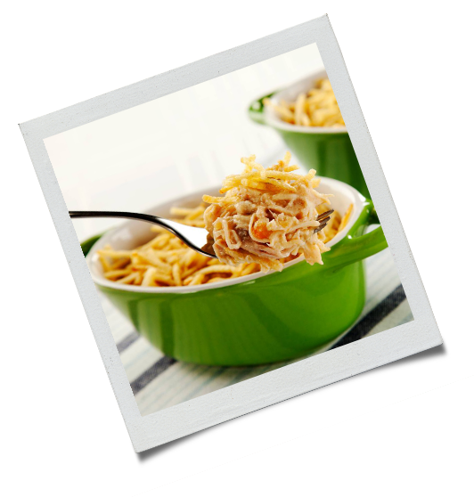

2 peitos de frango desfiado

1 lata de creme de leite
1 lata de milho verde
1 copo de requeijão cremoso
100g de azeitona sem caroço
200g de mussarela fatiada
100g de batata palha
1 xícara de água
1 pitada de sal

Bata no liquidificador o milho, requeijão, creme de leite e a água;
Refogue o creme do liquidificador com o frango desfiado, as azeitonas e o sal até ficar com uma textura espessa;
Coloque o refogado em uma assadeira, cubra com mussarela e espalhe a batata palha por cima;
Leve ao forno até gratinar.